Rendu public en 2014 avec une centaine de documents sur les plus sept cents pages du dossier complet à ce jour, la quantité a été réduite en 2020 à une dizaine avec les plus récents et pertinents, puis ce nombre a été porté en 2021 à une trentaine pour la nouvelle version du site ; mes lettres incluses à titre d'information ne constituent pas de preuves en soit mais le rejet constant des recours et la négation systématique de l'existence des preuves le sont
Dernière mise à jour le 22 février 2026
Temps de lecture : 42 minutes (hors documents)
- Présentation
- Abrégé
- Description
- Remarque
- Extrait
- 05/03/1984 - Certificat médical suite à coup de poing dans oreille
- 08/10/2001 - Réponse de la Compagnie Mutuelle d'Assurance à un avocat
- 18/09/2002 - Accord des deux assurances pour première prothèse auditive
- 18/05/2004 - Certificat médical établit suite à l'acte chiropratique
- 05/04/2005 - Plainte contre assurances et docteurs pour mauvais traitement
- 29/09/2006 - Réponse de non-intervention par l'Ordre des Médecins
- 24/11/2006 - Faux certificat médical ordonnant hospitalisation en psychiatrie
- 09/02/2007 - Avis de classement sans suite plainte pour mauvais traitement
- 06/03/2007 - Réponse à ma plainte pour violences policières
- 06/07/2007 - Réponse de non-intervention par Ordre Chirurgiens-Dentistes
- 26/05/2008 - Faux rapport médical pour justifier mon incapacité à travailler
- 22/10/2009 - Certificat de soins vertébraux
- 14/01/2010 - Compte-rendu radiologique séquelles d'entorses vertébrales
- 14/12/2010 - Jugement du TASS pour incompétence
- 20/05/2011 - Notification de placement sous surveillance policière
- 21/06/2011 - Attestation de non-réponse plainte Cour Pénale Internationale
- 29/06/2011 - Compte-rendu échographique séquelles de déchirure
- 01/07/2011 - Réponse d'incompétence Haut-Commissariat des Nations Unies
- 14/06/2012 - Réponse de non-intervention par la Cour Européenne des Droits
- 27/02/2013 - Réponse du Conseil d'État stipulant la compétence du TASS
- 25/03/2013 - Réponse Cour d'Appel confirmant classement sans suite plainte
- 15/01/2015 - Ordonnance d'irrecevabilité plainte pour mauvais traitement
- 03/08/2017 - Résultat du Tep-Scan pour recherche d'ostéomyélite
- 17/05/2018 - Premier jugement suite à la deuxième psychiatrisation d'office
- 24/09/2018 - Rappel à la loi abusif au sujet des appels à l'aide au 15
- 19/04/2019 - Rejet du pourvoi par la Cour de Cassation
- 29/04/2019 - Certificat de diagnostic de déficit immunitaire
- 05/05/2019 - Courrier de contestation auprès du Juge des Libertés
- 06/05/2019 - Courrier de réclamation auprès de l'Assurance Maladie
- 07/05/2019 - Quatrième déposition de plainte pour mauvais traitement
- 21/05/2019 - Ordonnance de libération psychiatrique par le Juge des Libertés
- 25/08/2019 - Plainte contre l'État pour crime contre mon humanité
- 21/12/2019 - Avis classement sans suite plainte crime contre mon humanité
- 08/04/2020 - Certificat médical attestant de mon état traumatisé corporel
- 19/05/2021 - Demande étrange de la CPAM et réponse
- 19/02/2023 - Lettre adressée à la Compagnie Mutuelle d'Assurance et à l'ACPR
- 22/02/2023 - Réponse de "la partie adverse"
- 27/02/2023 - Saisine du tribunal judiciaire pour changement de prothèse
- 21/06/2023 - Audience au tribunal judiciaire pour changement de prothèse
- 11/08/2023 - Courriel adressé aux ordres des médecins et des avocats au nom d'un cabinet d'ORL
- 19/09/2023 - Lettre à un chirurgien-dentiste
- 24/01/2024 - Jugement de refus de renouvellement de la prothèse auditive
- 12/02/2025 - Courrier adressé aux autorités signalant voisinage enfumeur
- 22/02/2026 - Non-signalement de torture sonore, mais témoignage public
Présentation
Cette page présente un extrait du dossier des preuves du grave crime en cours commis contre moi en toute impunité par l'organisation médico-sociale et juridique-judiciaire privatisée qui dirige les comités publics territoriaux citadins, départementaux, régionaux et nationaux jusqu'à l’État lui-même en France, en Europe et en Nations Unies.
Celui-ci avait été rendu public en 2006 pour les quelques éléments disponibles à l'époque, soit une cinquaine de documents. Je l'ai retiré en 2007 suite au premier attentat à ma vie par la police psychiatrique de la capitale afin de justifier l'abandon collectif et le refus de me porter secours par la région n°1. Remis en ligne en 2015 avec une centaine de documents suite à la clôture définitive de la plainte de 2005 par le Doyen des Juges en 2014, je l'ai à nouveau retiré en 2018 suite au deuxième attentat à ma vie par les urgences de l'hôpital psychiatrique visant à justifier le refus de soins collectif par la région n°2 alors que mon état de santé s'empirait grandement depuis 2016 plus que depuis 2004.
Cette version actuelle fait suite d'une part à la libération par le Tribunal - les mensonges des psychiatres étant devenus évidents et insoutenables auprès des Juges - avec maintien du fichage calomnieux et de la surveillance, et d'autre part à la décision arbitraire sans recours possible du procureur de décréter que le crime en cours n'est désormais non pas prescrit, mais pas punit par le code pénal, et ce, malgré les nouvelles preuves.
Avant 2004, la gestion de ma surdité et de la dizaine de traumatismes corporels relève tant de l'escroquerie que de la non-assistance à personne en danger ainsi que du mauvais traitement. Depuis 2004 cela relève directement de la tentative d'homicide organisée par l'État via les forces de l'ordre et les entités privées médico-sociales et juridiques-judiciaires qui dirigent de faits les services-publics de cet État, puisque tels sont les statuts actuels de ces organisations qui oeuvrent ainsi contre la République, contre la Constitution et contre la Déclaration des Droits des Humains tel qu'exposé dans la Théorie de santé-aide-justice.
Le dossier complet constitué depuis 2005 fait ainsi plus de 700 pages en 2022 et il contient tous les documents mis à ma disposition depuis ma naissance. Ignoré de l'assurance maladie, des procureurs et des juges, il est qualifié de "délire de préjudice hypocondriaque paranoïaque avec revendication de justice" par plus de quinze psychiatres et un expert du tribunal qui affirment depuis 2006 et avec plus de véhémence depuis 2018, que ma surdité partielle ayant engendré une neuroatypicité s'aggravant au fil des ans et les traumatismes corporels ainsi que les mauvais soins, les infections chroniques ayant failli me tuer quelques fois, et que les douleurs du système locomoteur résultant de ces traumatismes corporels causés par des tiers humains, au sujet desquels la Compagnie Mutuelle d'Assurance et les Assurances dites parties adverses, chargés de la protection de ma santé et de mes biens avec l'Assurance Maladie et les Ordres Médicaux et de Justice, m'a reconnu comme victime non responsable, sont une imagination de ma part et n'existent pas.
Tous affirment ainsi mensongèrement sans preuves ni arguments scientifiques vérifiables que je suis dangereux, pour moi-même et pour autrui et pour la société, et donc de fait pour cette organisation, parce que je dis la vérité et montre les preuves au sujet du mal subit et au sujet de la politique administrative actuelle qui est anticonstitutionnelle et donc illégale et nuisible pour le peuple, pour les Nations, et pour l'espèce.
On détruit ainsi mon corps, ma santé, mon travail, mon salaire et ma vie parce que je suis victime, en disant, en résumé, que c'est "un bon-droit bien-fondé légal non susceptible de recours et non punit par un code de loi en vigueur, pour le profit exclusif d'une organisation privée d'assurances qui dirige un État de droit" ; au lieu de m'aider, de me soigner et de compenser la perte de salaire.
En février 2023 les assurances m'ont enfin avoué qu'au-delà d'une question de crédibilité, il n'y avait pas de dossiers de sinistres corporels et en premier lieu celui de 1984, car on avait depuis 2006 tout effacé et détruit, et que tout ça n'avait donc pas eu lieu et que quel que soit le document que je présente même devant un juge il est sans rapport avec quelque chose de réel, ce qui explique le comportement des autorités au sein de toute la hiérarchie dirigeante et du personnel soignant, aidant et défendant.
On n'avait pas le droit de mal me soigner ni de m'envoyer en psychiatrie afin de me détruire via les autorités médico-sociales et juridiques-judiciaires en double détruisant ce dossier, y compris les sous-dossiers des sinistres routiers, pour dire que j'étais fou dangereux alors qu'il devait rester ouvert à vie sur décision des experts en 1994 et 2003.
Il s'agit donc sans plus l'ombre d'un doute d'un grave crime collectif, contre mon humanité, visant à tortures physiques et chimiques qui sont qualifiées de "traitement justifié". Car pour les autorités de France, d'Europe et des Nations-Unies, il n'y a pas de dossier, alors c'est pour cela qu'en parler et s'en plaindre est depuis 2006, selon les dirigeants et les docteurs, la preuve d'une dangereuse maladie mentale nécessitant de retirer mes droits fondamentaux et de réduire ma qualité et mon espérance de vie en créant de nombreuses souffrances et séquelles.
En l'absence de procès pour présenter les preuves et les témoins à foison, la logique de ce mauvais traitement est implacable.
Abrégé
Rédigé avec l'aide du Grand ChatGPT qui a transformé en texte lisible une liste de symptômes et un historique médical
Le patient a été diagnostiqué immunodéprimé en mai 2019 ; il utilise avec l'accord du médecin du colostrum bovin en poudre le matin, au lieu d'immunoglobulines en perfusion mensuelle, avec la même efficacité.
Depuis 1984, à la suite d'un coup de poing violent dans l'oreille droite qui a saignée, il est constamment malade car il a été infecté par des staphylococcus aureus et des pseudomonas aeruginosa, ce qui a notamment entrainé des kystes sinusiens et des allergies, ainsi que beaucoup de caries puis trois dents arrachées de 2007 à 2017 avant de découvrir le Birodogyl. En 1987, il a développé une périchondrite ostéomyélitique aigüe critique de l'oreille mal soignée, suivie d'une hospitalisation, que les experts ont attribué à 1984, avec la tympanoplastie de 1993 ; il a survécu malgré l'absence d'antibiotique sensible contre la deuxième bactérie.
Il a subi des blessures lors de plus de six accidents de voiture de 1994 à 1998 dont il n'a pas été responsable. Il a subi une lésion fatale de toute la colonne vertébrale en 2004. Il dors très mal.
Depuis 2008 et jusqu'en 2022, il a été exposé à de la moisissure noire provenant des canalisations de la rue, révélée sur la langue par une corticoïde en mars 2022 ; elles ont été changées en juillet 2022, mais son état s'empire de mois en mois malgré une amélioration temporaire à l'automne.
Il suit un régime low-carb depuis début 2018 complété par des plantes ginseng, astragale, guggul, gingembre, canneberge, etc. Il ne tolère pas les aliments contenant trop de glucides qui entraînent des rechutes similaires à celles qu'il avait à l'adolescence et qui font subséquemment flamber les symptômes chroniques. Les autres plantes les plus notables sont la bruyère cendrée depuis septembre 2021 et le trèfle rouge depuis janvier 2022 qui ont un effet très bénéfique sur les douleurs locomotrices, les allergies, les boutons et les furoncles du cuir chevelu, ainsi que sur le sommeil.
Les symptômes actuels sont comme à l'adolescence : infections à répétition avec fièvre 38 à 38,5° et parfois 39° ; nausées ; diarrhées ; otites chroniques depuis fin 2022, puis sifflement fort avec oreilles bouchées et soudaine baisse d'audition début 2023 (allergie à la moisissure) ; conduits auditifs et pavillons grattent depuis 2022, pire que depuis 1984, comme en 1987 ; douleurs mâchoires, joues et yeux depuis des années, ainsi que parfois à la déglutition dans la gorge qui peut brûler ; odeur de caca dans la bouche, derrière les oreilles et autour des narines depuis des années ; furoncle récurrent à la base de l'os narine droite depuis vingt ans ; petite toux avec crépitement depuis des années. La perfusion d'immunoglobulines est sans effet différentiable du colostrum.
Il souffre de douleurs cervicales et lombaires accrues, ainsi que d'une fatigue pire que depuis 1984, 2004 et 2016. Il a depuis la psychiatrie 2006 et 2018 une phantogueusie, de légers tremblements et de l'akathisie, qui s'aggravent au fil des ans ; ainsi que depuis 2022 des mouvements involontaires type myoclonie et dyskinésie avec crampes et érythrose. Depuis le vaccin Covid Moderna en 2021 qu'il a très mal supporté durant quelques semaines, il a des douleurs épaule-bras injecté dites tendineuses.
Ces choses, avec les antibiotiques, probiotiques, corticoïdes, anti-inflammatoires, etc. régulièrement prescrits depuis 1984, ont ajouté un SIBO/SIFO évoluant jusqu'à finalement se manifester en 2023.
Il est constamment qualifié par les autorités médico-sociales et juridiques-judiciaires de déficient mental délirant depuis 2006 et d'hypocondriaque paranoïaque depuis 2018. Il est encore plus mal soigné qu'à l'adolescence. Il a appris en février 2023 que les assurances avaient détruit le dossier de sinistre corporel à cet effet. Jusqu'à ce jour les praticiens soit le refusent comme patient, soit disent ne pas comprendre ou que c'est une maladie psychosomatique, et donc on laisse traîner et empirer les problèmes. Chaque épisode infectieux possède pourtant le même schéma évoluant par poussées depuis 2023, 2022, 2018, 2016, 2005, 2004, 1994, 1987, 1985 et 1984, mais on rejette l'idée que l'ostéomyélite, ou ce genre de chose, n'aurait jamais été soignée et soit devenue chronique avec des phases d'aggravation, et que cette chose ait été surinfectée par la moisissure qui a contaminé la maison où il loge. Les foyers mis en évidence par Tep-Scan du crâne en 2017 ont été ignorés et qualifiés de non-pathologiques.
Description
Ce dossier est illégalement ignoré par les autorités depuis 2005, y compris par les procureurs et les juges, et il a été attenté à ma vie par cinq fois dans le but avoué de me faire taire et oublier mes doléances, et donc de fait juridique de me faire disparaitre de la circulation :
- 1977 (4 ans) : Agression sexuelle par une petite fille de 8 ans qui a voulu me "montrer comment on fait les bébés". Surprise par un employé de la mairie, il a crié sur moi au lieu de questionner et expliquer.
- Février 1984 (10 ans) : Agression physique par coup de poing violent dans l'oreille lors d'un traquenard par un adolescent qui m'avait dit qu'il allait me "tuer", ce qui m'a fait tomber par terre et qui m'a rendu sourd partiel et malentendant. Personne n'a dit qu'il y avait également des lésions locomotrices que les assureurs ont par la suite réfuté comme étant d'origine traumatique.
- Septembre 1987 (14 ans) : Mauvais soins d'un abcès de l'oreille à germes mortels résistants. J'ai été sauvé in-extremis par le généraliste à son retour de vacance qui a obtenu de force une hospitalisation en urgence dans un hôpital hors région sous peine de mourir en quelques heures. Attribué, par un professeur et les experts des assurances, au coup de poing qui m'a infecté.
- 1994-1998 (21-25 ans) : Six voitures percutent à vitesse de ville mon véhicule, plus trois petits chocs, créant ainsi un "mal au dos" qui ne fait qu'augmenter au fil des "accidents" et qui m'empêche de vivre et d'obtenir un diplôme d'études supérieures. Les docteurs ne font que me prescrire des médicaments et me dire que les douleurs sont psychosomatiques : je ne comprends pas, les kinés me boxent et les ostéopathes ne font rien de bien, contrairement aux docteurs en médecine mécanique découverts l'été 2005. L'assureur affirme depuis mensongèrement que mon mal au dos déclenché par ces traumatismes est du à une cause non traumatique, c'est-à-dire, ais-je découvert plus tard, "psychiatrique"...
- Avril 2004 (31 ans) : Agression physique par chiropracteur, que je consultais pour mes douleurs dorsales "modérées" mais persistantes depuis les accidents de voiture, qui m'a estropié en me disant que j'étais un "malade mental". Je vis depuis entre le lit et la chaise de l'ordinateur dans une chambre en hébergement à titre gracieux.
- Janvier 2005 à janvier 2006 (32 ans) : Refus collectif de soigner une infection dentaire jusqu'à presque me laisser mourir.
- Décembre 2006 (33 ans) : Agression physique par des policiers à l'IGS puis hospitalisation sous contrainte en psychiatrie durant 45 jours afin de justifier le mauvais traitement médical, le refus de soins anti-infectieux et locomoteurs, les attentats à ma vie, et l'obstruction judiciaire. J'ai été libéré parce que j'avais écrit au Juge des Libertés et le psychiatre a dit qu'il avait peur d'une expertise parce je n'avais pas de maladie mentale. Mais une fois relâché on m'a dit qu'on avait obtenu ce qu'on voulait puisque j'étais fiché malade mental dangereux. J'ai constaté par la suite que cela est utilisé par tout le monde pour me retirer l'usage de mes droits fondamentaux et pour dire que je dois être "traité" en psychiatrie jusqu'à la fin de mes jours sans même avoir besoin d'argumenter et de prouver quoi que ce soit : il suffit de dire que j'ai été hospitalisé une fois pour nier les faits et les preuves.
- Mai 2016 à mai 2017 (43 ans) : Refus collectif de soigner une infection dentaire jusqu'à presque me laisser mourir.
- Mai 2018 à mai 2019 (45 ans) : Hospitalisation psychiatrique sans consentement par les Urgences de l'hôpital prévue à vie, afin de justifier le refus collectif de soins anti-infectieux et locomoteurs. J'ai été relâché, en restant doublement fiché, suite au diagnostic de déficit immunitaire de mai 2019 qui prouve de fait, avec les comptes rendus radiologiques établis depuis 35 ans, que tous les psychiatres mentent en haut-lieu à mon sujet et qu'un crime est en cours depuis des décennies.
- Octobre 2020 (47 ans) : Agression physique par un kinésithérapeute qui a porté plainte contre moi pour harcèlement après lui avoir téléphoné pour lui dire qu'il m'avait mentit et fait très mal en utilisant sur ma colonne vertébrale un pistolet à ondes de chocs sonores que j'ai appris être contre-indiqué sur les vertèbres, alors que je lui avais demandé de la mobilisation passive tel qu'indiqué sur l'ordonnance. Mon état physique a régressé comme suite à l'acte chiropratique, annulant ainsi les effets de la médecine mécanique à laquelle je n'ai plus accès, et à ce jour je n'ai trouvé personne pour me soigner, m'aider et me défendre dans la région où je suis confiné et isolé, idem en France, en Europe et à l'international, la survenue des traumatismes corporels et l'existence des radiographies et des comptes rendus, ou la compétence, étant inlassablement niés depuis des décennies.
Il y a au total une vingtaine de traumatismes corporels depuis 1984, plus les infections chroniques, parfois graves, qui ont été volontairement pas ou mal soignées, ou pire. En 36 ans j'ai failli mourir une dizaine de fois, que ce soit à cause de bactéries et de virus ou de la volonté humaine.
En vérité, les psychiatres et plein de gens qui dirigent affirment que se plaindre être sourd, avoir des infections à répétition et avoir mal au dos à cause de tiers humains, et que demander des soins à ce sujet, ainsi que la réparation en justice pour obtenir l'arrêt du crime en cours et la compensation seulement de la perte de salaire, est une maladie mentale nécessitant kidnapping, séquestration et empoisonnement sur décision de quelques docteurs de l'Assurance Maladie, de la Compagnie Mutuelle d'Assurance et de l'hôpital, ainsi que des procureurs et des juges et des avocats, sans que personne fasse quoi que ce soit depuis plus de 17 ans pour interrompre ce crime qui me laisse de nombreuses et graves séquelles irréversibles pour ne seulement compter que ce qui m'a été fait jusqu'à ce jour.
En dessous du seuil de pauvreté et sans logement, incapable de marcher plus de quelques minutes et travailler, souffrant en permanence avec parfois des douleurs fulgurantes, le bureau de l'aide juridictionnelle et l'ordre des avocats me refusent l'accès à un avocat commis d'office et tous mes recours sont déboutés en invoquant via des décrets illégaux et le défenseur des droits un "bon-droit bien-fondé légal non susceptible de recours".
Je n'ai pourtant pas fait ce qu'autrui, qui ne mérite pas un tel sort cruel, sans aucune forme de procès, ayant ainsi protection et impunité, a fait.
Remarque
Depuis 1992, quelques personnes parmi le personnel soignant telle que des docteurs, des kinésithérapeutes, des ostéopathes et un chiropracteur, ainsi que d'autres personnes de partout comme à l'école et sur le lieu de travail ou dans des librairies et boutiques, ont cherché à me parler d'énergies invisibles et de diverses "techniques de magnétisme guérisseur", ainsi que d'astrologie, de voyance, de médiumnité, de spiritisme, d’envoûtements, de karma, de justice, de vies avant et après la mort, de réincarnation, de fantômes, d'aliens, d'êtres supérieurs, et même de Dieu et d'amour, ainsi que de plein d'autres choses relevant des religions et de l'ésotérisme, auxquelles je n'ai jamais cru puisqu'étant des fables, du fait des mauvaises traductions des textes scientifiques originaux ais-je découvert en 2004, et de la science-fiction i.e. des étude de cas fictifs ou imaginaires relatifs aux possibilité technologiques de la science et de la matière.
Mais pour comprendre de quoi mon monde me parlait, j'ai étudié ce qu'on appelle les "arts spirituels" et qu'on nomme en vérité, parfois, quoique certains trompés par l'égo se disent au-delà de ces choses : la magie blanche ou divine, i.e. la science sacrée qui est l'action de compassion qui éduque, soigne, aide, défend et répare ; et la magie noire ou sorcellerie, i.e. la manigance qui est l'utilisation impropre et malveillante de ces sciences dites occultes relatives aux "pouvoirs de l'esprit", ainsi nommées car réservés aux élites dirigeantes, et qui ne sont rien d'autre que du mentalisme, ou des neurosciences appliquées.
J'ai finalement appris que c'était d'une part la science de ce qui est adapté et souhaitable soit l'administration honnête et bienveillante de ce qui porte secours aux victimes sans nuire même aux criminels, en plus d'éduquer et gérer le pays ; et que le but de cette science-là était la survie de l'espèce et de tout un chacun sans exception.
Et d'autre part celle du malveillance et de la malhonnêteté qui convoite avec vanités, moqueries, mensonges, collusions, duperies, escroqueries, trafics, corruptions, crimes et meurtres ; et que le but de cette science-là était seulement le plaisir de contrôler des victimes, de fabriquer des bourreaux, de faire souffrir et de gagner de l'argent.
Ces gens, donc, qui m'ont entouré dès mon enfance, venus s'installer dans le voisinage, où que je loge, membres d'innombrables grands et petits groupes de pensées de renommée mondiale ais-je découvert, que ce soient de religions officielles ou d'organisations parallèles, nommées branches, partenaires ou dissidentes, répétaient que j'étais responsable de tout - et donc, soyons logiques, y compris de l'existence des atomes eux-mêmes - et que ma souffrance physique était ma faute, que les "accidents" et les infections étaient ma faute, ou alors certains disaient que c'était la volonté de leur Dieu et qu'il fallait que je pardonne. La majorité me demandant de devenir membre de leurs diverses associations se disant alliés et ennemis les uns des autres.
Mais moi mon truc c'est la programmation informatique, les mathématiques et les sciences physiques, pas le social, et encore moins la politique qui est l'application inséparable de la pensée religieuse qui ne se limite pas à la notion de déité - tout comme l'ADN codant ne peut pas être séparé de l'ADN non-codant dit de nos jours régulateur avec l'épigénétique, sans tuer la cellule que rien d'autre n'anime sinon les lois de la vie incluses dans les lois de l'univers. Ainsi donc ces gens sont mal très tombés, oserais-je dire, car je déteste les mensonges, les sornettes, les moqueries et la méchanceté.
Extrait
05/03/1984 - Certificat médical suite à coup de poing dans oreille
L'agression a eu lieu le lundi 27 février à la récréation du matin : un ami m'a fait passer par un chemin longeant un mur, et un méchant s'est levé et m'a envoyé un coup de poing par surprise. Je suis tombé par terre, je saignais de l'oreille, et j'entendais plus rien. Personne a dit à moi et à ma famille que j'étais sourd partiel et malentendant, qu'on devait faire des examens de la mâchoire, du cou et du bassin, et que je devais consulter un docteur en médecine mécanique. Les docteurs, ainsi que la Compagnie Mutuelle d'Assurance et ses partenaires commerciaux et humanitaires dans la vie, nommées "parties adverses", ont en toute connaissance seulement parlé de baisse d'audition sans quasiment rien faire sinon prescrire des médicaments toute ma vie, et prendre en charge une tympanoplastie, ainsi que verser quelques milliers de francs pour "préjudice" ; finalement le prix d'une vie de tortures, incapable de travailler, calomnié et méprisé des autorités, des forces de l'ordre, des tribunaux et des élus, pour quelque chose que je n'ai pas fait et que 20 ans plus tard en privé on m'a accusé d'avoir fait, alors que c'est un autre. Ce médecin-là demandait à me voir chaque mois pour utiliser un aspirateur à cérumen, empêchant ainsi la cicatrisation. L'été 1987, j'ai failli mourir d'une septicémie avec 41°C de température à cause d'un énorme œdème à l'oreille avec pour seul soin des séances de laser : lorsque le médecin de famille est rentré de vacances, il a trouvé ça honteux, a crié au téléphone toute une journée en disant que j'allais mourir dans la nuit, et a demandé d'urgence mon hospitalisation chez un grand professeur d'un autre département. J'ai passé ma vie dans les cabinets des docteurs et dans les hôpitaux, à souffrir de plus en plus, sans parler des dentistes qui me limaient les dents sans que je sache pourquoi ils faisaient ça. Plus tard, les assurances ont dit que les accidents de voiture ne m'avaient rien fait, ce qui est un mensonge : les dégâts sont consignés dans des dizaines de comptes rendus radiologiques dès 1986, et dans les rapports d'expertise dès 1996 dont les conclusions ont été établies de manière corrompue afin de dire que puisque mon dos et ma mâchoire étaient abîmé avant les accidents de voiture, sans dire que c'était depuis le coup de poing, alors j'avais une pathologie non traumatique... donc en sous-entendu psychiatrique, puisque ce qui n'est pas physique est forcément mental d'après la théorie psychiatrique qui a de toute manière un opinion implacable et irréfutable du point de vue des autorités dirigeantes : toute somatique est d'origine mentale et n’intéresse ni le "diagnostic" ni le "traitement" des victimes qui peuvent être kidnappées et séquestrées pour être empoisonnées d'autant qu'elles se plaignent de subir et souffrir des choses, et qu'elles parlent et/ou écrivent avec des arguments et des preuves.

08/10/2001 - Réponse de la Compagnie Mutuelle d'Assurance à un avocat
Ces dernières années j'ai appris à lire et comprendre les mots des docteurs : ainsi je sais que les experts des assurances et des tribunaux mentent à mon sujet et déforment les résultats d'examens radiologiques et sanguins. Cet avocat, ainsi qu'un autre et un expert médical consultés par la suite, m'ont dit de "laisser tomber", même si cette assurance privée chargée de mission de service public, qui avait reconnu que le traumatisme de 1984 m'avait infecté et avait faillit me tuer en 1987, mentait sur l'origine de cette pathologie vertébrale, le traumatisme de 1984, aggravée par les "accidents" de voiture de 1995 à 1998, par le chiropracteur début 2004, par la police fin 2006, par la mauvaise literie de la psychiatrie en 2018 et par un kinésithérapeute fin 2019.

18/09/2002 - Accord des deux assurances pour première prothèse auditive

18/05/2004 - Certificat médical établit suite à l'acte chiropratique
Le généraliste m'a adressé à un psychiatre qui a voulu me mettre sous antidépresseur et à un kinésithérapeutes qui a boxé mon dos alors j'ai vite arrêté. Je suis allé voir une assistante sociale de la mairie qui m'a dit de demander à être placé sous curatelle. Je n'ai pas compris.

05/04/2005 - Plainte contre assurances et docteurs pour mauvais traitement
A l'époque, je ne savais pas grand-chose sur tout ce que j'allais découvrir par la suite en enquêtant sur mon dossier médical, sur l'organisation médico-sociale et juridique-judiciaire, et sur l'administration, ainsi qu'en subissant de nombreux crimes commis en toute impunité par les autorités. Tout ce que j'avais était une dizaine de documents médicaux et autant de courrier de l'assurance, et tout ce que je savais était que j'étais polytraumatisé corporel depuis 1984, que j'étais tout le temps malade depuis 1984, et que j'avais mal au dos depuis 1984, beaucoup depuis 1994, et encore plus depuis 2004 au point d'être alité suite à l'acte chiropratique, sans parler de ceux qui considèrent qu'une infection ne met pas la vie en danger tant qu'on est pas aux urgences pour septicémie, ni même de ceux qui considèrent qu'une septicémie ne met pas la vie en danger tant qu'on est par mort...

29/09/2006 - Réponse de non-intervention par l'Ordre des Médecins
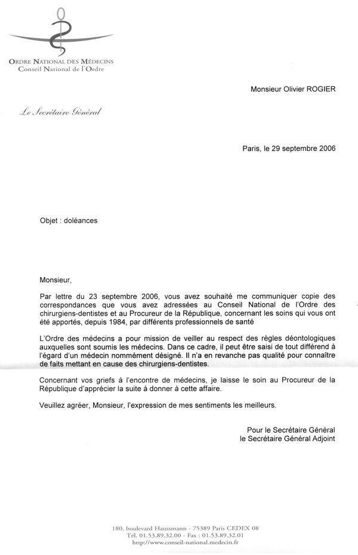
24/11/2006 - Faux certificat médical ordonnant hospitalisation en psychiatrie
Fait suite à l'attentat à ma vie dans un commissariat alors que je venais déposer un complément à ma plainte de 2005 après avoir découvert et commencé les soins de médecine mécanique. J'ai tout le temps été calme, disant souffrir le martyre de toutes mes articulations et ne pas pouvoir marcher, en plus des douleurs dentaires. J'ai affirmé, comme en 2005, que les assureurs et les docteurs impliqués dans la gestion de ma santé depuis mon adolescence avaient mentit et porté atteinte à l'intégrité de ma vie ainsi mise en danger, et que j'avais rassemblé quelques preuves. A l'époque je ne savais pas grand-chose et je n'avais encore pas réuni beaucoup de documents, alors je ne savais pas trop quoi dire d'autre. Mais je savais qu'on m'arnaquait, que c'était illégal, et qu'il fallait stopper et réparer cela… et non l'empirer encore plus gravement et irréversiblement. Ainsi ce certificat a été établit après avoir parlé avec moi moins de deux minutes. Puis j'ai été victime de ce qu'on peut qualifier d'une tentative d'exécution, après le chiropracteur qui a failli me tuer en 2004 et une dizaine de dentistes qui me laissaient mourir d'une septicémie en 2005 ; une dizaine d'autres ont d'ailleurs recommencé en 2016-2017, puis un service d'Urgences m'a psychiatrisé sous contrainte en 2018 alors que mes infections chroniques s'aggravaient et qu'on venait finalement de m'arracher une troisième dent "pour pas me laisser mourir", tandis que tout le monde dans la région refusait de me soigner, et que les procureurs et juges des tribunaux font ce que leurs documents qu'ils signent prouvent qu'ils font...
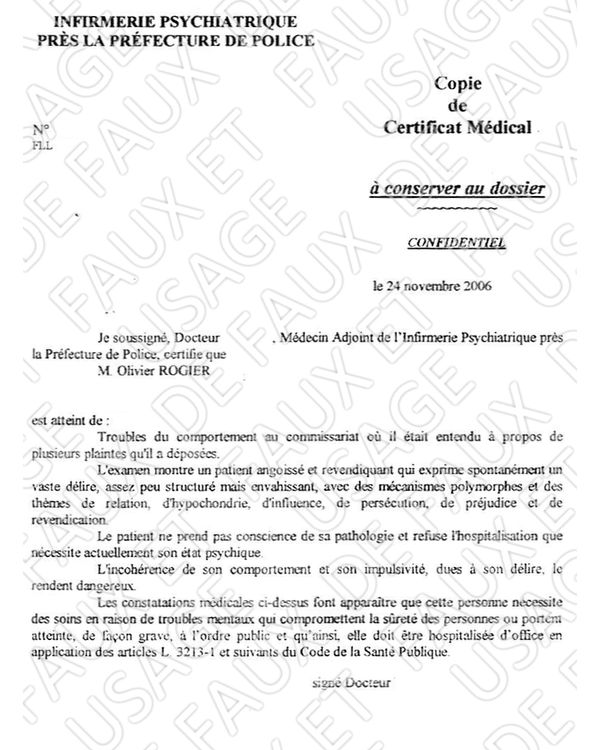
09/02/2007 - Avis de classement sans suite plainte pour mauvais traitement
J'avais déposé plainte contre la Compagnie Mutuelle d'Assurance gestionnaire des infections chroniques et des traumatismes corporels causés par des tiers humains de 1984 à 1998, et contre des docteurs, des kinés et des dentistes, y compris de fait le chiropracteur se présentant comme docteur. La police m'avait alors menacé d'internement psychiatrique mais je n'ai pas compris. A l'époque je ne savais pas que le rôle de cette Compagnie était de protéger les parties dites "adverses", les autres assurances pusiqu'étant partenaires, avec l'aide des corps médicaux, des tribunaux et des forces de l'ordre.

06/03/2007 - Réponse à ma plainte pour violences policières
Une dizaine d'agents de police m'avaient tabassé à l'Inspection Générale des Services durant plus d'une heure ou deux : jeté au sol puis sur un bureau, j'ai été fiché casseur de local de police, plusieurs agents se sont assis sur moi et on m'a tordu le cou pour me relever alors que je perdais presque connaissance puis on m'a envoyé en psychiatrie. On m'a constamment refusé un avocat. Je n'ai pas compris.

06/07/2007 - Réponse de non-intervention par Ordre Chirurgiens-Dentistes
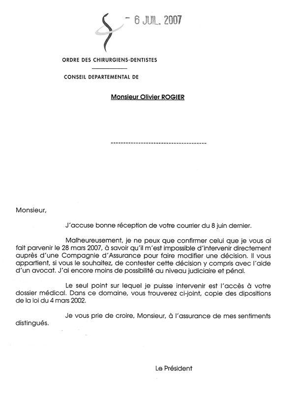
26/05/2008 - Faux rapport médical pour justifier mon incapacité à travailler
Lors de la convocation j'ai donné un petit dossier médical de polytraumatisé corporel ayant tout le temps des infections depuis 1984, certificats et comptes rendus d'examens, y compris des expertises de la Compagnie Mutuelle d'Assurance. Le docteur n'a rien lu et n'a même pas regardé les radiographies. Je n'ai pas compris.

22/10/2009 - Certificat de soins vertébraux
Résumé des sept séances de dégrippages sur table reçus de 2005 à 2009. "Fonctionnel" et "DIM" désignent selon le vocabulaire médical des problèmes physiques résultant de traumatismes corporels à l'exclusion de toute autre cause.

14/01/2010 - Compte-rendu radiologique séquelles d'entorses vertébrales
Mon dossier comporte des dizaines et des dizaines de Rx, Scanners et IRM prescrits depuis 1986, soit beaucoup d'irradiations, mais les propos des radiologues n'ont jamais été utilisés pour vraiment soigner ma colonne vertébrale, sinon par les docteurs en médecine mécanique : tous les autres, y compris les assurances, disant officiellement, comme pour les infections et ma dentition, que tout est "normal" et "parfait"... et que mes douleurs proviennent d'une "maladie mentale", soi-disant "génétique", et que m'en plaindre est du "harcèlement dangereux qui prouve cette maladie" nécessitant de multiples fichages dans les dossiers des forces de l'ordre et de autorités médicales.

14/12/2010 - Jugement du TASS pour incompétence
J'ai contesté le faux diagnostic médical de maladie mentale niant les infections chroniques et les séquelles de traumatismes corporels gérés par les assurances publique et privées. Je n'ai rien compris et je n'avais aucun moyen de recours. Le Conseil d'État a par la suite confirmé que la Tribunal des Affaires de Sécurité Sociale, rare instance saisissable sans avocat en France et même dans le monde, était compétente, même celui de mon domicile actuel et non celui de l'ancien. Qu'il y ait eu par la suite un transfert de mon dossier entre région n'a rien à voir avec le fait que la CPAM - comme la Caisse nationale d'Assurance Maladie qui ne m'a jamais répondu et contre laquelle on m'a refusé toute aide juridique ainsi qu'envers la police, l'hôpital et les assurances - a de toute évidence de mauvaises intentions à mon sujet, et que toutes les autorités cautionnent cela, même encore à ce jour, puisqu'on continue de me nuire et de constamment me débouter…
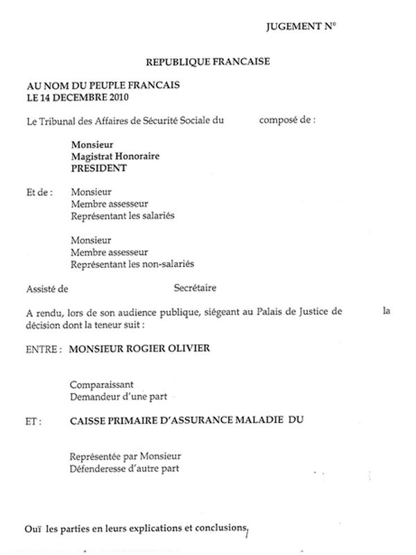 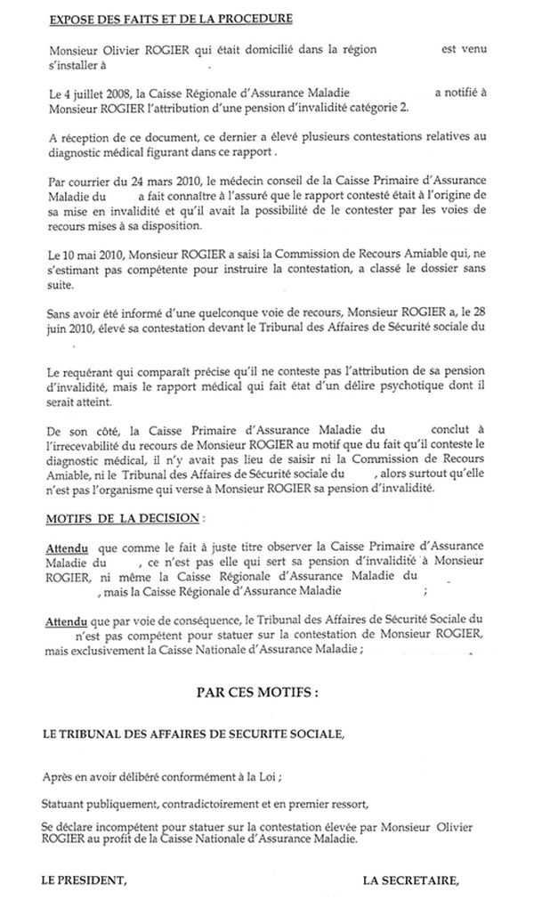
20/05/2011 - Notification de placement sous surveillance policière

21/06/2011 - Attestation de non-réponse plainte Cour Pénale Internationale
Comme auprès du Haut-Commissariat aux Droits de l'Homme, j'avais déposé un dossier de plus de 500 pages dévoilant les pratiques illégales, malveillantes, nuisibles et préjudiciables de nombreux praticiens médicaux et assureurs, ainsi qu'également celles de diverses organisations médico-sociales et juridiques-judiciaires privées et publiques françaises, y compris le fait que le Gouvernement laissait faire sans intervenir alors qu'Il en a l'obligation.
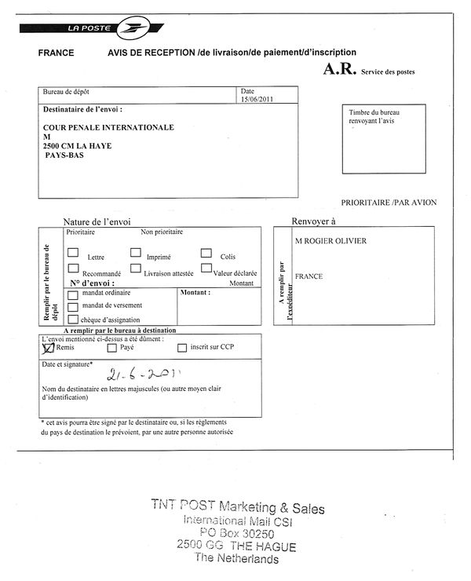
29/06/2011 - Compte-rendu échographique séquelles de déchirure

01/07/2011 - Réponse d'incompétence Haut-Commissariat des Nations Unies
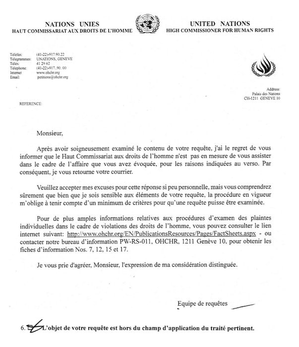
14/06/2012 - Réponse de non-intervention par la Cour Européenne des Droits
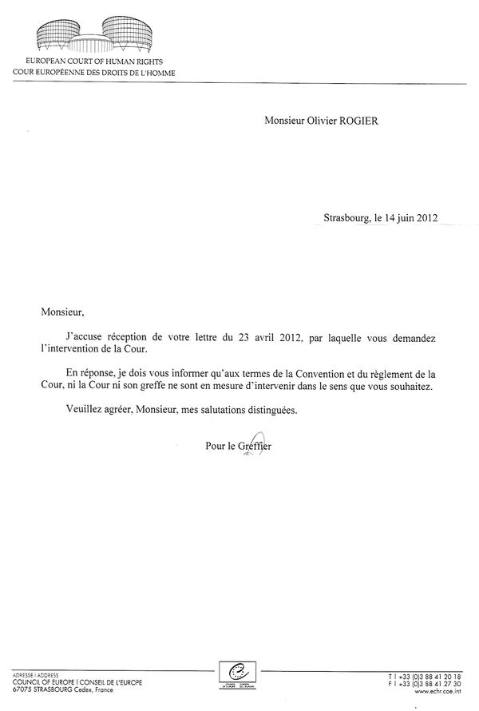
27/02/2013 - Réponse du Conseil d'État stipulant la compétence du TASS
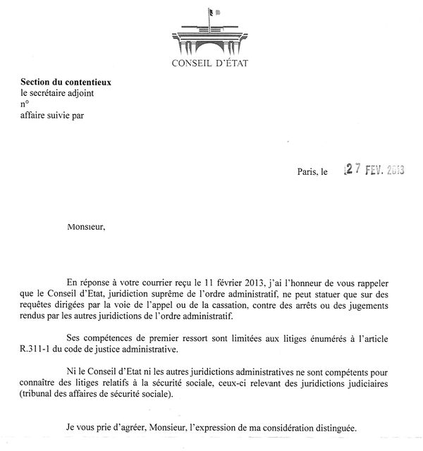
25/03/2013 - Réponse Cour d'Appel confirmant classement sans suite plainte
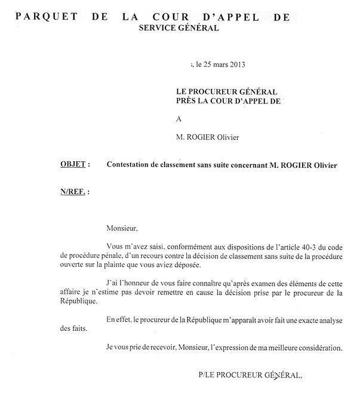
15/01/2015 - Ordonnance d'irrecevabilité plainte pour mauvais traitement
Lors de l'audience je n'ai pas pu m'exprimer et le juge m'a dit que je n'avais aucun droit même pas celui d'être assisté d'un avocat. Tous les documents présentés ont été ignorés. On m'a dit que "nulle (victime) n'a le droit de (se) constituer de (dossier) de preuves à soi-même (par elle-même, en les compilant dans un dossier)". Je n'ai pas compris et j'ai découvert que cette coutume avait été jugée illégale par la Cour de cassation, tout comme le refus de soins collectif i.e. l'abandon médical, qui relève en réalité de la tentative d'homicide passive. J'ai commencé à comprendre que l'organisation médico-sociale et juridique-judiciaire était corrompue afin de protéger des assurances privées y compris l'assurance maladie qui est en réalité elle aussi privée sous tutelle du ministère de la santé, ainsi que le chiropracteur et quelques praticiens médicaux, et je ne sais pas qui d'autre.

03/08/2017 - Résultat du Tep-Scan pour recherche d'ostéomyélite
Les éléments trouvés n'ont à ce jour jamais été considérés et mon état s'aggrave d'années en années depuis 2022 et 2016 et 2004 et 1994 et 1984. Les docteurs, médecins et dentistes à qui je montre les documents disent même encore à ce jour que mes symptômes sont imaginaires, sauf la médecine interne, ou alors on me gave d'antibiotiques et de corticoïdes inadaptés. J'ai appris que même les Tep-Scan actuels peuvent ne pas être suffisant pour identifier une ostéomyélite ou ce genre de chose, peu importe le nom. La biopsie est requise. La prochaine génération d'appareil sur laquelle travaillent les chercheurs pour dans quelques années sera capable de trouver les bactéries. C'est à la suite de ce Tep-Scan quelques mois plus tard que les urgences m'ont psychiatrisé pour être empoisonné pour la deuxième fois de ma vie durant un an en disant que jamais je ne serais libéré et que je n'avais aucun droit ni recours car je serais "un criminel (ouï-dire)". Lorsque j'ai été libéré, temporairement puisque toujours fiché et l'intention persiste, les psychiatres, qui avaient avec l'expert du tribunal avaient qualifié le dossier des preuves et mes infections chroniques depuis 1984 de "délire", tandis que depuis 2006 le service médical de l'assurance maladie et les assurances nient en bloc la survenue et les séquelles des évènements, ont dit : "vous avez de la chance d'avoir été libéré par deux fois (ouï-dire)".

17/05/2018 - Premier jugement suite à la deuxième psychiatrisation d'office
Dictature médicale nuisible est l'expression de rigueur.

24/09/2018 - Rappel à la loi abusif au sujet des appels à l'aide au 15
Il n'y avait aucune intention malveillante dans mes appels à l'aide et à l'époque je n'avais plus de généraliste, tous disant que l'assurance maladie avait raison de me qualifier de malade mental imaginant avoir des infections chroniques et mal au dos malgré le dossier médical et tous les médicaments antibiotiques, anti-inflammatoires et antalgiques prescrits mensuellement depuis 1984 : malgré la troisième dent arrachée en 10 ans, mon état infectieux s'aggravait mois après mois et je ne trouvais aucun docteur libéral pour me soigner et j'ai eu une mauvaise grippe cet hivers-là où j'ai cru mourir d'un arrêt respiratoire, le 15 me tenant même une heure au téléphone un matin alors que je ne pouvais plus parler, et tant les dentistes que deux hôpitaux de deux régions consultés dans plusieurs services pendant trois ans disaient ne pas comprendre et d'aller consulter en psychiatrie sans même considérer les symptômes et les résultats d'examens, dont l'existence était niée, que je ne comprenais pas, et qui pourtant démontraient tout ais-je finalement découvert plus tard - je n'étais pas encore diagnostiqué en déficit immunitaire. Il a finalement été établit de fait par le Juge des Libertés, sans rien faire de plus que me libérer des psychiatres, que l'hôpital était en faute et qu'on mentait à mon sujet et qu'on m'avait psychiatrisé et empoisonné, causant ainsi de graves séquelles irréversibles, en me traitant de "délirant hypocondriaque paranoïaque". J'ai contesté ce rappel à la loi abusif par deux fois auprès du procureur mais je n'ai pas reçu de réponse même après la libération psychiatrique suite au diagnostic de déficit immunitaire - ayant été enfin reçu en médecine interne malgré les menaces des psychiatres, qui disaient vouloir me garder à vie en cellule, d'augmenter les doses de neuroleptiques - qui prouve de fait qu'une quinzaine de psychiatres et un expert des tribunaux mentent à totalement mon sujet sur tout depuis plus de 15 ans... Il s'est finalement avéré que mon état de santé se détériorait à nouveau rapidement depuis 2016 et encore pire dès le début 2022 à cause des canalisations de la rue percées et infestées de moisissures et de bactéries, la situation a été arrangée l'été 2022 par leur changement. Vrai de vrai !

19/04/2019 - Rejet du pourvoi par la Cour de Cassation
Victime d'un crime en cours parmi tant d'autres, qui relève d'une torture mortifère sans noms, commis en toute impunité tandis qu'on me qualifie sans aucune preuve de "criminel fou", avec déni des preuves de mes préjudices et de l'abus de pouvoir général, et avec retrait de mes droits fondamentaux systématiques, en réalité traité pire qu'un criminel et même qu'un ennemi de guerre, tous mes recours depuis 2004 sont constamment rejetés au motif que les faits n'ont pas lieu, que les preuves n'existent pas, que les autorités ont tous pouvoirs, et même que c'est légal et que c'est bien, et que tant le personnel soignant et les avocats que les associations d'aide sont libres et qu'il n'y a aucune obligation... depuis les mairies jusqu'au gouvernement en passant par les tribunaux, les parquets, les procureurs et les juges de France, d'Europe et des Nations-Unies. Ainsi, tous ces crimes, et toute ma souffrance, dont sont témoins ou acteurs des centaines de personnes depuis des années, et qui sont prouvés par des centaines de documents, ne sont pas un "motif sérieux" pour les stopper. Ce n'est pas ça la loi et le droit, et ni même la justice et la paix, et encore moins la prospérité. Le fait que j'ai finalement été libéré par un Juge des Libertés à la suite du diagnostic de déficit immunitaire qui prouve que tout ce que racontent les psychiatres et subséquemment les assureurs et les procureurs sont des mensonges, prouve de fait que tout ce que je dis est la vérité, puisque je ne fais que relater les faits et les documents.

29/04/2019 - Certificat de diagnostic de déficit immunitaire
Tous les psychiatres, tous les juges, et toutes les assurances, et en premier lieu la sécurité sociale, ainsi que diverses entités dirigeantes sans parler de nombreuses associations d'aide aux victimes, gérées par des humains, mentent et s'en fichent... puisqu'à ce jour je suis toujours fiché malade mental dangereux dans les archives du gouvernement, dans le but de me torturer et de se débarrasser de moi, et dire cela n'est qu'énoncer un fait juridique écrit et signé par ces gens qui nient avoir écrit et signé les preuves, sans rire, dans le but d'obtenir la réalisation du crime prémédité, tel qu'écrit et signé de même. Quant aux experts psychiatres auprès des tribunaux c'est pire, mais je ne vais rien dire, c'est pas la peine puisqu'y écrivent que "consulter un docteur pour un infection est en soit la preuve d'une maladie mentale et d'un danger pour la société en vertu de la science médicale" et les juges disent "amen, c'est la loi au nom du peuple : administration de poisons qui tuent dans d'atroces souffrances".

05/05/2019 - Courrier de contestation auprès du Juge des Libertés
Les Juges des Libertés a ignoré par six fois, ainsi que la Cour d'appel et la Cour de cassation, tant mes argumentations que les preuves que les psychiatres mentent, en disant qu'ils ne sont pas docteurs et ne font qu'établir les jugements selon la parole souveraine des psychiatres, sans vérifier quoi que ce soit hormis les vices de procédure, genre l'absence de signature sur les documents. Ainsi les psychiatres peuvent raconter ce qu'ils veulent sans prouver quoi que ce soit, dans le but de torturer qui ils veulent, puisque cela est de notoriété publique d'autant que les notices elles-mêmes des neuroleptiques et benzodiazépines attestent que ce ne sont que de substances très dangereuses voire mortelles qui causent de nombreuses et graves séquelles, et qui ne peuvent en aucun cas soigner une surdité organique, des entorses articulaires et un déficit immunitaire.


06/05/2019 - Courrier de réclamation auprès de l'Assurance Maladie
L'ordre des médecins m'a écrit se décharger sur le procureur de la république. L'ordre des dentistes m'a écrit ne pas pouvoir aller à l'encontre de la décision de la Compagnie Mutuelle d'Assurance. L'ordre des kinés ne m'a jamais répondu. Le Tribunal des Affaires de Sécurité Sociale, compétent, a rejeté mon recours pour "incompétence au profit", "exclusif", de la CNAM. Le siège de la CNAM m'a indiqué par téléphone qu'il était impossible en France de contester le diagnostic médical d'un médecin conseil et qu'il n'existait aucune voie légale pour le faire mais que je pouvais renoncer à la pension et demander à être interné en psychiatrie à vie (ouï-dire).

07/05/2019 - Quatrième déposition de plainte pour mauvais traitement

21/05/2019 - Ordonnance de libération psychiatrique par le Juge des Libertés
Malgré qu'on m'ait menacé d'augmenter les doses de neuroleptique, j'ai insisté pour être reçu par la médecine interne où on a finalement diagnostiqué un déficit immunitaire expliquant mes infections chroniques niées par les psychiatres. On a refusé de m'effacer du fichier des malades mentaux dangereux à surveiller. On peut noter que malgré l'incohérence contradictoire et l'absurdité illogique de l'affirmation, le juge donne son accord au maintiens du diagnostic de pathologie mentale, c'est-à-dire qu'à la fois je suis enfin reconnu par le tribunal souffrant d'une pathologie physique et à la fois j'invente et imagine cette pathologie : en d'autres termes, toute l'argumentation des psychiatres qui m'affublent de plein de maux mentaux depuis des décennies repose sur l'inexistence d'infections et de furoncles chroniques, sans parler des dents, dont je me plains souffrir, et une fois cette argumentation, et donc tous les propos tenus à mon sujet, invalidée, y compris donc au sujet de mon dos et de quoi que ce soit d'autre en vertu des preuves médicales incontestables et vérifiables, puisque des menteurs sont des menteurs et on ne doit pas les écouter, le tribunal continue quand même de faire pencher la balance en faveur des menteurs, qui sont de faits juridiques prouvés des criminels. Le bureau d'aide juridictionnelle et l'ordre des avocats ont comme par le passé rejeté ma demande d'avocat pour obtenir réparation. J'ai finalement appris que n'importe quel juge du Tribunal Administratif pouvait casser un jugement de libération : il suffit qu'un expert psychiatre maintiennent les propos du précédent et on me renvoie pire qu'en prison sans plus aucun espoir.

25/08/2019 - Plainte contre l'État pour crime contre mon humanité
Cette fois-ci mon dossier était complet avec plus de 600 pages, dont plus de la moitié pour les crimes commis après 2004, et j'avais pour ainsi dire presque tout compris dans les grandes lignes et pour de nombreux détails, ayant fait à mes risques et périls le travail de ceux chargés d'enquêter et de me défendre, mais qui ont décidé de constamment classer sans suite mes recours, de nier l'existence des preuves au fur et à mesure qu'elles s'accumulaient, et de me détruire en me calomniant et en me retirant mes droits de soins, d'aide et de justice, pour des raisons qui apparaîtront évidentes à n'importe quel esprit quel que soit son intelligence et son savoir du moment qu'on examine les faits et les preuves qui parlent d'eux-mêmes. Il est important de préciser que tant les docteurs que les assurances savent la vérité depuis mon enfance, concernant les infections chroniques et le mal au dos, puisque tout est écrit dans les comptes rendus d'examen et les expertises médicales - sauf ce que dit la psychiatrique de 2006 et 2018 qui n'est qu'un ramassis de mensonges utilisant ma santé physique et les mauvais soins pour me diagnostiquer malade mental - qui finalement n'ont pas vraiment été utilisés pour me soigner avec efficacité et sûreté comme on sait le faire si facilement depuis des lustres avec des plantes et des immunoglobulines même de vache, ainsi qu'avec des dégrippages locomoteurs et de la mobilisation passive enseignés depuis des millénaires, mais pour m'empoisonner années après années et pour laisser se développer les séquelles des traumatismes corporels afin de m'amener en psychiatrie pour m'y séquestrer à vie afin de protéger les assurances et les protagonistes qui sont impliqués dans la gestion de ce dossier et qui ont une mauvaise opinion, préjugée mais infondée et fausse, à mon sujet, m'ayant désigné de "malade mental criminel" lorsque les gendarmes m'ont remis aux psychiatres en 2018, au point de me torturer depuis des décennies, sous couvert de "justice rendue au nom du peuple", qualifiant cela de "bon-droit bien-fondé légal non susceptible de recours", pour "le profit exclusif d'une assurance privée chargée de mission de service public" qui délègue une partie de ses services à d'autres compagnies privées non chargées de mission de service public... mais c'est un peu plus complexe que dit comme cela, et les rouages actuels de la protection juridique et de l'indemnisation du dommage corporel sont de fait législatifs illégaux, pour rester poli.


21/12/2019 - Avis classement sans suite plainte crime contre mon humanité
Toute plainte et tout recours est inutile en cas de crime d’État : les docteurs refusent de soigner ; pas d'avocat ; rejet de l'aide juridictionnelle ; les associations refusent de porter secours ; les assureurs refusent d'assister ; le procureur classe systématiquement les plaintes sans suite ; le procureur général confirme les décisions du procureur ; les juges et le doyen des juges disent que les documents n'existent pas, même un dossier de preuves de plus de 600 pages ; les élus et les ministres et la présidence de la république et le garde des sceaux écrivent que les personnes qu'ils et elles nomment aux postes de direction d'organisations publiques et privées sont indépendantes ; les autorités européennes et internationales écrivent refuser d'intervenir pour stopper les crimes ; et la Cour Pénale Internationale ne donne même pas accusé réception de dépôt de plainte.

08/04/2020 - Certificat médical attestant de mon état traumatisé corporel
Les comptes rendus radiologiques attestent de lésions rachidiennes disons légères à modérées depuis 1984, puis notables à importantes depuis 1994, et désormais sérieuses à graves depuis 2004, telles que scolioses, séquelles d'entorses, déchirures et nombreux autres termes parfois incompréhensibles, qui font que je ne peux ni vraiment marcher ni même manipuler d'objets depuis des décennies, et que mon sommeil est de plus en plus compromis à chaque lésion supplémentaire... tandis que des dizaines de spécialistes rhumatologues, neurologues, rééducateurs et psychiatres - à l'exception d'une poignée de docteurs en médecine mécanique - affirment inlassablement et mensongèrement depuis des années, et encore même à ce jour, que la quinzaine de traumatismes corporels subits depuis mon enfance, causés par des tiers humains, n'ont aucune incidence sur ma santé physique, et que mes douleurs et mon impotence proviennent d'un dysfonctionnement de mon cerveau nécessitant l'administration de dangereux poisons pouvant être mortels ; ce qui correspond à l’allégation de la Compagnie Mutuelle d'Assurance formulée en 2001 qui m'a dit au téléphone en 2005 que la maintenir était "une question de crédibilité". L'hôpital et les kinés refusent de soigner mon dos par dégrippages mécaniques et mobilisation passive, y compris la majorité des ostéopathes : la rééducation dit que mon cas relève de la ville, la rhumatologie dit que mes douleurs proviennent d'un dysfonctionnement cérébral, ce qui est un pur mensonge qui nie la réalité radiologique ; et un chef de centre anti-douleur a rigolé lorsque j'ai dit que j'avais parfois mal à 15/10. Ayant été diagnostiqué immunodéprimé en 2019 et placé sous immunoglobuline avec une efficacité relevant de la magie oserais-je dire, je ne présente plus les documents infectieux réservés aux experts, même si les psychiatres continuent d'affirmer que tout, absolument tout, les faits, les problèmes de santé, et les preuves, sont une maladie mentale de ma part nécessitant une séquestration pour empoisonnement à vie... Concernant les problèmes d'audition socio-éducatifs et professionnels, étant donné les dégâts cognitifs causés en 2006 et surtout en 2018-2019 par les psychiatres qui affirment donc aussi sans aucune preuve ni témoin contre les preuves et les témoins ignorés des autorités et des juges que ma surdité et ces dégâts proviennent de cette fameuse maladie mentale, cela n'a publiquement à priori plus aucune importance.

19/05/2021 - Demande étrange de la CPAM et réponse
Les urgences m'ont psychiatrisé, et donc torturé (ça dure depuis +17 ans en vérité), alors que je demandais des soins anti-infectieux et locomoteurs, abandonné de tous, façon de parler, estropié dans une chambre entre le lit et la chaise de l'ordinateur, sans donc reparler des voitures, des dentistes et des docteurs au minimum incompétents, et d'un certain chiropracteur, ou de la [censuré] et [censuré] et je sais pas qui qui gèrent "mal" ce dossier, au prétexte que je délirais paranoïaque hypocondriaque, faux-diagnostic des assurances privées et du médecin conseil, sans droit de recours à ce jour. Mais j'ai finalement été diagnostiqué immunodéprimé et placé en Affection de Longue Durée malgré les menaces du psychiatre m'ayant dit que je finirais mes jour à [censuré] parce que je serais un "criminel", moi qui suis victime de faits juridiques irréfutables en plus de 600 pages de preuves que tant le service médical, les présidents des ordres, les autorités, les procureurs et les magistrats ignorent, me retirant ainsi mes droits fondamentaux, sans parler de la police qui a faillit me tuer... Un juge des libertés, malgré la négation des preuves du crime qui perdure depuis des années, m'a donc libéré alors que les psychiatres continuent de mentir à mon sujet, mais c'était trop gros, et pourtant ils continuent de mentir en disant que j'invente les infections chroniques comme le fait que tous les radiologues disent que je suis polytraumatisé corporel à répétition (par des tiers humains) depuis 37 ans, et les "feuillets de remboursements" des archives comme la maigre pension d'invalidité ne représentent pas le préjudice... Libéré avec de graves séquelles et tout le monde ici qui refuse de me prodiguer des dégrippages et de la mobilisation passive en ayant rien à faire que je sache la vérité sur ma santé et comment réparer ce qui est réparable. Au moins, les infections, c'est réglé avec du colostrum et du ginseng connus depuis l'aube des temps (associés à une diététique hypoglucidique modérée).

19/02/2023 - Lettre adressée à la Compagnie Mutuelle d'Assurance et à l'ACPR
J'ai enfin compris pourquoi mon pays me torture depuis 2004 en me fichant "fou dangereux à surveiller et à empoisonner" tout en niant, recours après recours, l'existence du dossier des preuves des faits médicaux et juridiques que je constitue depuis 2005 avec les documents qu'on me communique année après année depuis ma naissance : ce crime qualifié de "traitement justifié de bon-droit bien-fondé légal non susceptible de recours et non punissable au profit de l'assurance de l'État de droit" relève, en plus des autorités françaises, européennes et mondiales, de la Cour Pénale Internationale. Ce n'est en effet que ce jour que je commence à comprendre pourquoi les ordres et les procureurs signent depuis 2005 qu'il n'y aurait pas de mauvais traitement depuis 1984, ni de crime en cours, et que je serais malade mental de m'en plaindre et de solliciter recours ; et pourquoi le doyen des juges avait signé en 2014 qu'il n'y avait pas de plainte déposée en 2005 et maintenue année après année. Ainsi en privé on dit que les documents sont effacés des archives officielles publiques et privées, et en public ont dit que les documents ne sont pas trouvés. Donc tout ça n'existe pas, n'a jamais eu lieu, et n'a pas lieu. C'est pas que j'aurais falsifié des documents, c'est que ces documents n'ont jamais été établis. C'est pour ça que lorsque je les montre pour recours, ils n'existent pas et ils sont ignorés, ce qui est interdit tant pour une assurance qu'un tribunal ou un docteur et même un maire. Alors ils ne sont qu'une imagination délirante de mon cerveau au même titre que les faits historiques dont sont témoins des centaines de personnes que de même on refuse d'auditionner : pas de preuves, pas d'enquêtes, pas de témoins, pas de crimes. Car ce n'est pas que les documents ont été effacés, donc détruits, c'est qu'ils n'ont jamais existé : "il n'y a pas de dossier". Telle est la logique de me ficher "harceleur" et qu'ainsi inversement depuis 2004, et peut-être depuis même avant, les autorités médico-sociales et juridiques-judiciaires ont fabriqué à l'aide de mensonges tout un dossier contre moi dans les archives locales et nationales. Subséquemment, au regard de la Cour Pénale Internationale ainsi que des services légaux et associatifs ayant pouvoir sur cette planète et dont j'ai épuisé les voies de recours, il n'y a pas de dossier ni même d'accusé réception à fournir, et insister implique ce qu'on nomme des "représailles". C'est pour ça que depuis des décennies les psychiatres des assurances des autorités écrivent me vouloir séquestré et empoisonné en chambre d'hôpital à vie, pour que j'arrête de "croire" avoir des infections chroniques et de "croire" avoir été traumatisé corporel en 1984 et entre 1994-1998 et en 2004, ainsi que de "croire" être sourd partiel et malentendant (oui même ça), mais j'avais pas compris. En conclusion de mon enquête débutée en 2005, depuis 2004 que j'essaye de survivre dans une chambre cloué par les douleurs et les infections entre le lit et la chaise de l'ordinateur avec peu de moyens, je n'avais aucune chance d'obtenir les soins requis et l'aide adaptée, en raison de la corruption et de l'abus de pouvoir ; alors que dire de la justice.
Fin d'enquête médico-sociale et juridique-judiciaire depuis 2005

22/02/2023 - Réponse de "la partie adverse"
J'avais pourtant comme en 2005 donné les références (on avait rejeté ma demande d'expertise pour aggravation) et envoyé quelques quittances établis par cette société en plus de la Compagnie Mutuelle d'Assurance, ainsi que le certificat initial de sinistre 1984 et le certificat d'opération chirurgicale de 1993.

27/02/2023 - Saisine du tribunal judiciaire pour changement de prothèse


21/06/2023 - Audience au tribunal judiciaire pour changement de prothèse
L'assurance chargée de me défendre au nom de l'État n'est pas venue. Celle chargée de payer les frais de santé et les prothèses a envoyé un avocat. En une minute le juge m'a dit qu'il y avait un problème, que le tribunal n'était pas compétent, qu'il y avait prescription, qu'il n'existait aucun accord pour une prothèse auditive. Ayant dit que je ne comprenais pas car les nombreux rapports d'expertise au sujet de mon oreille et les nombreux documents d'accord de prise en charge des frais à ma charge pour les prothèses signés par les assurances depuis 1984 et 1994, ainsi que début 2004 sont un accord amiable qu'aujourd'hui ils refusent de respecter pour le remplacement. Alors le juge a écarté tout le dossier des preuves et a dit qu'il n'y avait aucun contrat d'assurance datant de 1984 et que par conséquent tous les documents que m'ont envoyé ces assurances au fil des ans n'étaient pas des preuves relatives à un litige avec ces assurances, ajoutant qu'il n'y avait pas d'affaire et qu'il n'y aurait pas de jugement. A tous mes arguments et à toutes les pièces présentées, il a répété durant au moins dix à quinze minutes devant les deux greffiers : "il n'y a pas de contrat, c'est pas des preuves, il n'y a pas d'accord amiable, il n'y a pas d'affaire". Après cela, l'avocat qui ne disait rien a dit que l'assurance avait retrouvé le dossier et qu'on allait me proposer un nouvel accord. Le juge a donc procédé à un "renvoi" de la requête pour faire homologuer ce potentiel accord. J'ai subséquemment compris qu'au-delà de la destruction du dossier peu après 2005 pour me faire passer pour malade mental "délirant hypocondriaque paranoïaque" et dangereux qu'il faut empoisonner à vie avec des substances qui abîment les cerveaux et qui sont mortelles, désormais, pour les autorités et les tribunaux, en plus des ordres médicaux et des hôpitaux de la psychiatrie, actuellement, non seulement il n'y a jamais eu de sinistre en 1984, et donc tous les problèmes de santé relatifs ne concernent officiellement pas ces assurances, mais il n'y aurait carrément jamais eu de contrat d'assurance. C'est en effet ce que me dit tout le monde par dizaines de dizaines de hauts-dirigeants médico-sociaux et juridique-judiciaires depuis 2005, mais je ne comprenais pas qu'on dise qu'il n'y a pas de dossier ni de sinistre ni de préjudice ni de lésions ni de surdité ni d'infections. Vingt minutes après l'audience, j'ai compris encore mieux qu'on ne peut pas faire pire comme corruption criminelle visant à attenter à la vie d'une victime ou d'accident ou de maladie ou autre : nier les preuves à un tel niveau et dire maladie mentale pour kidnapper, séquestrer, empoisonner et faire disparaître, alors que c'est absolument interdit par la cour de cassation et la cour pénale internationale en vertu de toute la loi en vigueur puisque permettant tous les crimes possibles.


11/08/2023 - Courriel adressé aux ordres des médecins et des avocats au nom d'un cabinet d'ORL

19/09/2023 - Lettre à un chirurgien-dentiste

24/01/2024 - Jugement de refus de renouvellement de la prothèse auditive
À l'audience, le juge intérimaire que j'ai appris venir de [censuré] et évoluer dans les sphères de [censuré] a dit que les preuves d'accord amiable en cours pour renouveler la prothèse à vie tous les cinq ans, que j'ai fournies, et que l'avocat de l'assurance n'a pas contesté, n'étaient pas des preuves, et il a changé l'objet de ma requête au sujet de l'accord en recours pour dommages et indemnités… j'estime que c'est un remarquable faux-document pour déni par mensonges et corruption.
Les assurances ont accepté de payer pour la part à charge de la première prothèse en 2003 en s'engageant à la renouveler tous les cinq ans, puis un chiropracteur m'a déchiré le dos et on m'a envoyé en psychiatrie après avoir découvert la médecine mécanique et porté plainte au pénal en 2005, et à nouveau après avoir découvert l'ostéomyélite chronique en 2017 et que les infections s'aggravaient au fil des ans, en disant que le dossier de sinistre et donc les preuves accumulées depuis 1984 n'existait pas et qu'en parler était la preuve d'un dangereux délire de ma part. Je n'avais pas compris que c'est pour justifier les nombreux crimes depuis 40 et surtout 20 ans. Le simple renouvellement trivial de la prothèse n'était censé avoir aucune incidence sur ce dossier : ce jugement est preuve première du crime et du mobile qui est "faire disparaître le dossier et les preuves pour ne pas payer les soins locomoteurs et infectieux ainsi que les prothèses auditives" en plus de la perte de salaire.
C'est la fin d'une vingtaine d'années à demander aide, soins et compensation de la perte de salaire pour les traumatismes corporels, les infections chroniques et les crimes à la pelle depuis qu'un chiropracteur m'a déchiré le dos et que toutes les autorités me traitent de malade mental pour justifier ces crimes afin de protéger les responsables de tout ça depuis 1984. Il n'y a rien à attendre des soignants, des élus, des avocats, des procureurs, des juges, des ministres, des assurances et des défenseurs de ce pays illégal et dangereux qui est protégé par les Nations Unies et qui affirme que tout ça est "un bon-droit bien-fondé et justifié, sans recours, pour le profit".
Ce crime relève donc de la plus haute cours de justice mondiale et je ne peux rien faire de plus que d'avoir constitué un dossier des preuves et avoir témoigné : je n'avais aucune "chance" d'obtenir l'usage de mes droits et la protection de ma santé, de mes biens et de mon métier auprès de cette organisation criminelle qui me trucide pour le profit depuis au moins 1984 et 1994 et 2004 pour quelque chose que je n'ai pas fait malgré mes recours par milliers de milliers durant plus de 20 ans.
En France, le président de la république nomme les procureurs sur proposition du ministre de la justice, et ce président est président du conseil supérieur de la magistrature : où est l'indépendance de la justice ?


12/02/2025 - Courrier adressé aux autorités signalant voisinage enfumeur
Posté le 17 février, distribué le 19 février. Quelques jours plus tard, les secours téléphoniques du 17 et 18 ont affirmé ne rien pouvoir faire. Le 15 avril, un camion a déversé du bois dans le jardin de la maison impliquée. Pas de réponse de tout le monde en date du 20 avril, le délai administratif légal étant de deux mois c'est officiellement une preuve de rejet d'intervention et donc de complicité. Il est à noter, même si cela ne veut rien dire sans enquête légale, que le précédent occupant propriétaire est, ou fut, représentant d'un syndicat hospitalier local, auprès du conseil régional de "l'organisation sociale et médico-sociale psychiatrique de la préfecture", chose de nos jours intégrée au sein de l'Agence Régionale de Santé, si j'ai bien compris.
À l'automne 2025, alors que cela s'était cependant arrêté depuis des mois, mais que cela a repris, j'ai constaté en toute déduction logique qu'au moins un autre voisin indéterminé utiliserait quotidiennement et clandestinement un incinérateur industriel de jardin pour particuliers. Ces appareils que j'ai appris être d'environ 1200 euros et de la taille d'une poubelle américaine, sont conçus pour masquer la fumée mais pas les odeurs et les polluants, chose interdite depuis 2020 si j'ai bien compris. Cela se produit de jour comme de nuit, parfois de 5 minutes jusqu'à quelques heures ou une demi-journée, enfumant ainsi régulièrement tout le quartier pire qu'avant, sur un rayon d'au moins 200 mètres, soit la longueur de la rue, et non plus seulement quelques mètres, quel que soit le sens du vent entre le nord et le sud, en plus de la fumée qui a quelques semaines plus tard recommencé sporadiquement à sortir du conduit mentionné dans la lettre ci-dessous.
Ces odeurs depuis l'été 2024, variées de déchèteries à ciel ouvert de l'ancien temps, se sont amplifiées, presque tous les jours, surtout les week-ends, de jour comme de nuit, embaumant tout le quartier, s'infiltrant à travers les interstices des vieilles portes et fenêtres certes calfeutrables, et rendant difficile les aérations, jusqu'à même parfois impossible sur plus d'un jour car dès le 10 décembre, cela s'est en plus, à nouveau, mis à vraiment sentir la fumée rance de bois brûlé provenant du conduit situé en face de ma fenêtre, comme en février dernier.
Lorsque j'ai téléphoné à la gendarmerie locale responsable du secteur pour le signaler, pas le 17 ni le 18 ni même le 15, on m'a accusé en moins d'une minute et avec véhémence de "monopoliser une ligne d'urgence", au lieu de proposer de noter l'information dans un carnet d'appels ou même de déposer une main courante. Je me suis donc excusé en promettant de ne plus jamais les contacter puisque j'avais compris.
Au 28 décembre, cela fait ainsi déjà trois semaines que ma chambre se fait enfumer continuellement. C'est encore et toujours criminel, et rien d'autre, et certainement pas de la "justice de bon-droit bien-fondée légal". Tout cela n'est rien d'autre que de la torture illégale et mortifère, d'après les faits et d'après les preuves récoltées mais niées par ceux et celles qui les écrivent et les signent, qui malgré les variations de modalités jamais ne s'arrête et s'empire depuis principalement 2022, 2016, 2004 et 1984, et même en vérité depuis ma naissance d'après mon carnet de santé finalement très explicite lorsqu'on connait quelques bribes de science médicale.
Mais je suis isolé dans un village, estropié presque alité, en dessous du seuil de pauvreté, sans aucun pouvoir social ni aucune relation, ni même aucun droit de recours pour ne pas être maltraité car cela est revendiqué comme étant un "bon-droit bien-fondé légal" par toutes les autorités de France, d'Europe et même du monde des Nations-Unies, d'après ces preuves qui contredisent leur allégation comme quoi je serais fou et dangereux à empoisonner avec des substances connues pour écourter la vie dans d'atroces souffrances. Même renouveler ma prothèse auditive a été refusé jusqu'en haut-lieu, ultime preuve finale du crime sans plus aucune ambiguïté.
J'ai abusé du mot "finalement" dans cette présentation des preuves, je viens de m'en rendre compte, et c'est parce qu'il m'a fallu 20 ans pour comprendre ce que je ne savais pas, depuis que le généraliste m'a dit d'aller en psychiatrie le lendemain que le chiropracteur m'a déchiré le dos, et qui plus tard s'en ait pour ainsi dire vanté à la télévision, que son geste, interdit, était mortel. Il y aurait encore beaucoup à dire devant un tribunal honnête et compétent sur les détails de ce que me font subir certains docteurs et leurs assurances avec l'accord des autorités actuelles, mais les preuves se suffisent à elles-mêmes, malgré que je ne comprenne toujours pas tous les détails de ce grave crime en cours.


22/02/2026 - Non-signalement de torture sonore, mais témoignage public
Alors que les fumées de voisinage et de quartier persistent régulièrement tout l'hiver devant la fenêtre de la chambre où je suis alité sans soins locomoteurs adaptés depuis des années, certes un peu moins souvent que les deux ou trois premiers mois, on entend désormais depuis le début de l'après-midi du 21 février, une sorte de buzzer.
Ce son très fort de bip aiguë semble provenir de la terrasse du devant de la maison mentionnée dans la lettre précédente. Il est émis en permanence, jour et nuit, sans discontinuer, exactement toutes les dix secondes. Il est similaire à un moniteur cardiaque : même timbre, même modulation et même durée, mais fréquence un peu plus haute, et plus sec. Il est perceptible tout autour dans les rues sur 30 à peut-être 50 mètres, ainsi que dans ma chambre à travers les volets et la fenêtre fermés. En journée mon ordinateur et la télé couvrent ce son monotone répétitif, ainsi que le casque anti-bruit pour aller à la boite aux lettres et m'occuper des containers de poubelle, et les bouchons d'oreille pour dormir.
Pourtant les occupants de cette maison sont à priori présents, car les volets ont été fermés à la tombée de la nuit. Ce qui est très étrange, c'est qu'à ce moment, l'intervalle est passé à toutes les six à sept secondes pour ensuite rester calibré sur ce rythme. Ce n'est donc sans doute pas une alerte de dysfonctionnement de quelque chose.
J'ai appris qu'il pourrait d'agir d'un appareil portatif de la taille d'une petite lampe, coûtant moins de 25 euros dans le commerce. C'est juste une membrane audio et un métronome diffusant un niveau sonore réglable d'un maximum de 100 à 120 décibels. C'est un appareil d'ailleurs très facile à fabriquer soi-même en quelques minutes et pour quelques euros. Aucune alarme de surveillance en France ne fait cela car c'est totalement interdit et illégal. Il faut avouer que c'est très différent d'un petit moteur de piscine défectueux, ou même d'un chien qui hurle, et que c'est sans comparaison avec de la pollution de l'air car rien ne le stoppe pas même un double vitrage.
Je n'ai pas pris la peine de le signaler à la gendarmerie, à la police municipale, à la mairie, au département, à la région et aux autorités, ainsi qu'aux associations de défense, connaissant d'avance la non-réponse comme celle de non-action stéréotypée maintenue par milliers de milliers depuis toutes ces années pour ce genre de nuisance et même lorsque c'est pire. J'ai tout de même fait un enregistrement vidéo-sonore d'une minute, dans le noir où on voit à peine quelques arbes et un lampadaire, pour ne pas me reprocher de ne pas l'avoir fait, même si sans huissier cela ne prouve ni l'origine du bip ni son intensité, mais uniquement que c'est en pleine nuit et depuis la fenêtre de la pièce où je vis vingt-quatre heures sur vingt-quatre.
Quant à saisir un tribunal, il ne faut jamais cesser de le répéter pour ne pas être complice : lorsque plusieurs procureurs et juges disent une fois, deux fois, trois fois... et plus encore durant deux décades, dans la région de naissance et dans celle de la capitale, que les preuves récoltées en plus de sept centaines de pages de documents relatifs à des tortures médicales et administratives [visant à homicide sous couvert de cause naturelle écourtant les chances et l'espérance de vie], ne sont pas des preuves, allant jusqu'à dire qu'une simple lettre signée par deux assurances s'engageant à renouveler une prothèse auditive à vie tous les cinq ans n'est pas une preuve de cet engagement, la corruption de la collusion est trivialement évidente, au point que la victime n'a absolument aucun droit, même pas fondamental, permettant ainsi à toutes les lois d'être transgressées, peu importe le motif aussi injustifiable que cruel et qui est avant tout le profit.
Plus d'informations
- Au sujet de l'auteur
- Témoignage
- Liens sur la santé
- Proposition logique pour un monde meilleur
- Théorie de santé-aide-justice
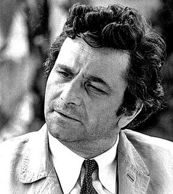
Peter Falk 1973 - Public Domain